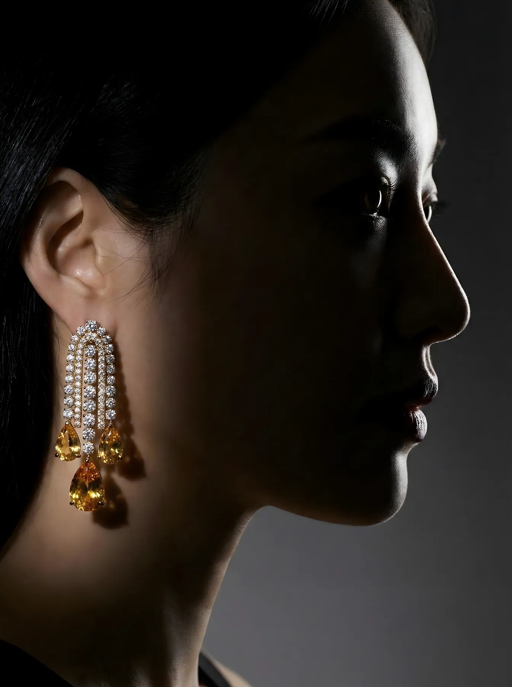
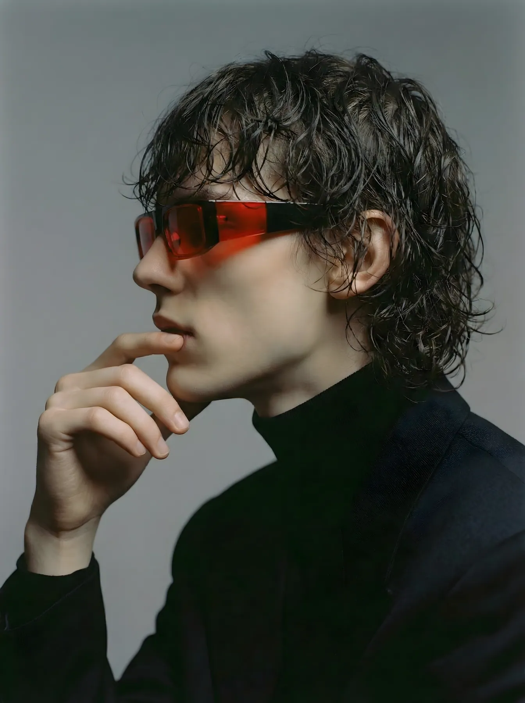
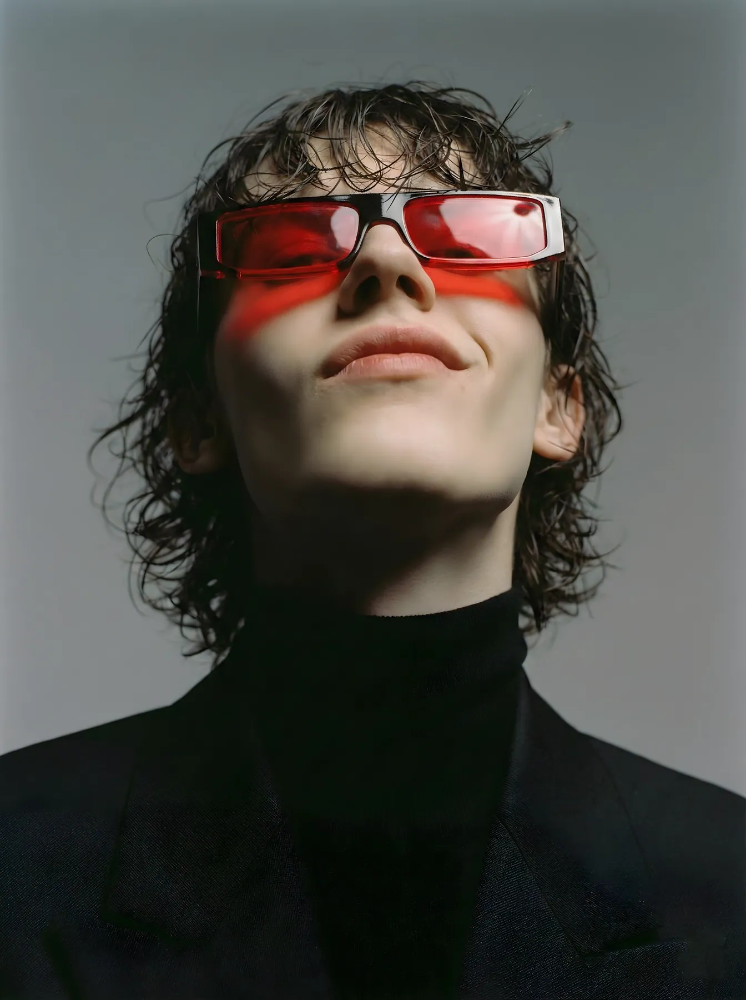

Digital humans
- Type
- Character design
- Role
- Character design and AI generation
A brand face only works if it is the same face every time. Four AI characters, each held across dozens of scenes, outfits and camera angles.
The jewelry designer
A keynote, a sketching session, a red-carpet portrait and a Paris street. Still the same person.


Three more faces
Red-tinted shades on grey, a platinum blonde on pink, and a burgundy uniform shot from every angle.

